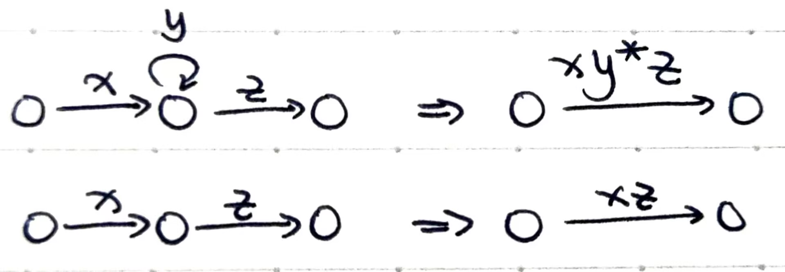

计算理论¶
约 2328 个字 预计阅读时间 8 分钟
Abstract
这课它不进脑子啊！
补天用的，不全。有问题请务必告诉我TAT
Admonitions 使用说明：
Danger
放易错点
Warning
放错过的题
Note
放要会证的 lemma
Example
放要会做的题
Tips
放一些思路
Info
其他
1 Finite Automata & Regular Languages¶
1.1 Language¶
- symbol
- alphabet \(\Sigma\)
- string \(w\) (length of string \(|w|\), empty string \(e\))
- \(\Sigma^N\), \(\Sigma^*\), \(\Sigma^+\)
- 字符串操作 concatenation \(w_1w_2\), exponentiation \(w^i\), reversal \(w^R\)
- language \(L\subseteq \Sigma^*\)
- 每个判定问题都和一个 language 对应
1.2 Deterministic Finite Automata¶
- DFA \(M = (K, \Sigma, \delta, s, F)\)
- 其中 transition function \(\delta : K \times \Sigma \to K\)
- configuration \((q, w) \in K \times \Sigma^*\)
- yields in 1 step with M \(\vdash_M\)
- yields with M \(\vdash_M^*\)
- 定义了 \(M\) accept 字符串的条件
- 定义了 \(M\) accept 的语言 \(L(M)\)
Danger
画 DFA 的时候，任何一个状态都要包含所有可能 symbol 的对应关系！即 \(\forall p \in K, \forall c \in \Sigma, \exists\ q \in K \text{ s.t. } \delta(p, c) = q\)
1.3 Non-Deterministic Finite Automata¶
- NFA \(M = (K, \Sigma, \Delta, s, F)\)
- 其中 transition relation \(\Delta\subseteq K\times (\Sigma\cup \{e\}) \times K\)
- configuration \((q, w) \in K \times \Sigma^*\)
- 定义了 yields in 1 step with M \(\vdash_M\), yields with M \(\vdash_M^*\), \(M\) accept 字符串的条件, \(M\) accept 的语言 \(L(M)\)
- Theorem. 任意 NFA \(M\) 都能找到一个 DFA \(M'\) 使得 \(L(M) = L(M')\)，反之同理。\(M\) 到 \(M'\) 的构造思路是，\(M'\) 中的状态集合 \(K'\) 是 \(M\) 中状态集合 \(K\) 的 power set。构造方法是，\(s'\) 是 \(s\) 的 \(\epsilon\)-closure，然后从它开始向外引边 (See here)。
Warning
Assignment 2 Q4. 将 NFA 转为 DFA：
答案
1.4 Regular Languages¶
- A language is regular if it is accepted by some DFA or NFA
Note
课程和作业中构造 DFA 证明了，如果 \(A\) 和 \(B\) 是 regular languages，\(A\cup B\), \(A\cap B\), \(\bar A\) 都是 regular 的；构造 NFA 证明了，如果 \(A\) 是 regular 的，那么 \(A*\) 是 regular 的。
| 语言类型 / 封闭性 | \(\cup\) | \(\cap\) | \(\circ\) | \(\bar A\) | \(*\) |
|---|---|---|---|---|---|
| Regular |
Note: \(A - B = A \cap \bar B\)，因此如果 \(\cap\) 和 \(\bar A\) 都封闭，则差运算也封闭。
1.5 Regular Expression¶
- 用来描述 Regular Languages
- \(L(\varnothing) = \varnothing\), \(L(a) = \{a\}\)
- \(L(R_1\cup R_2) = L(R_1) \cup L(R_2)\), \(L(R_1R_2) = L(R_1)\circ L(R_2), L(R^*) = L(R)^*\)
- Precedence: \(* > \circ > \cup\)
- Theorem. 任意 NFA \(M\) 都能找到一个 REX \(R\) 使得 \(L(M) = L(R)\)，反之同理。\(M\) 到 \(R\) 的思路是，首先简化 \(M\) 使得不存在 \(s\) 的入边且 final state 仅有一个且无出边；然后每次删除一个 state，即对于它的每一对入边和出边：

Warning
Assignment 2 Q6. 写 REX：\(\{w\in\{a,b\}^∗:\text{ the number of }b\text{'s in }w\text{ is divisible by 3}\}\)
答案
\(a^*\cup(a^*ba^*ba^*ba^*)^*\)
1.6 Pumping Theorem¶
Theorem. 若 \(L\) 是一个 regular language，则存在 pump length \(p\in \mathbb{Z}^*\) 使得 \(\forall w\in L\) with \(|w| \ge p\) 可被分为 3 个部分 \(w = xyz\)，满足：
- \(\forall i \ge 0, xy^iz\in L\)
- \(|y| > 0\)
- \(|xy| \le p\)
泵定理是 RL 的一个必要不充分条件。
Example
课程中用泵定理证明了 \(\{0^n1^n : n \ge 0\}\) 不是 regular 的，课后题目中也证明了 \(\{ww : w \in \{a, b\}^*\}\) 不是 regular 的。
这种证明通常的思路是，假设 \(L\) 是 RL，从而假设 pump length 为 \(p\)，然后构造一个含 \(p\) 且属于 \(L\) 的 string，证明它不符合 pumping theorem。
Info
常见的 non-regular languages 和简要证明思路 (\(p\) 是 pump length):
- \(L = \{0^n1^n\}\): 选 \(0^p1^p\)，则 \(xy^0z \notin L\)
- \(L = \{ww\}\), \(L = \{ww^R\}\): 选 \(ab^pab^p\) 和 \(b^paab^p\)，则 \(xy^0z \notin L\)
- \(L = \{0^m1^n\}\) where \(m > n\): 选 \(0^{p+1}1^p\)，则 \(xy^0z \notin L\) (\(m\ge n\) 也一样)
- \(L = \{0^m1^n\}\) where \(m < n\): 选 \(0^p1^{p+1}\)，则 \(xyyz \notin L\) (\(m\le n\) 也一样)
- 根据上面两个例子可以看出，union of 2 non-regular languages 不一定是 non-regular 的，例如 \(m > n\) 和 \(m \le n\) 的 union 是 \(0^*1^*\)
- \(L = \{0^m1^n\}\) where \(m \neq n\): 假设 regular，则 \((\{0^*1^*\} - L) \cap \{0^*1^*\} = \{0^n1^n\}\) is regular，矛盾
- \(L = \{1^n\}\) where \(n\) is prime: 选 \(1^k\) where \(k > p\) and \(k\) is prime，若 \(y = 1^s\) where \(0 < s \le p\)，则 \(\forall n \ge 0, k + (n - 1)s\) is prime。但取 \(n = k + 1\) 得到 \(k + ks = k(1 + s)\) is not prime，矛盾
- \(L \in \{0, 1\}^*\) where numbers of 0's and 1's are equal: 假设 regular，则 \(L \cup 0^*1^* = \{0^n1^n\}\) is regular，矛盾
Tips
Assignment 3 Q2 这样的题：
多想一想 \(\{0^n1^n : n \ge 0\}\) 不是 regular 这个例子，同时善用德摩根律之类的各种东西把需要证明的结果凑出来，能凑出来就是 regular 的。
2 PushDown Automata & Context-Free Languages¶
Context-Free Languages 有 2 种描述：Context-Free Grammar 和 Pushdown Automata
2.1 Context-Free Grammars¶
- CFG \(G = (V, \Sigma, S, R)\)
- \(V\) 是 symbols, \(\Sigma\) 是 terminals, \(V - \Sigma\) 是 non-terminals
- \(R\) 中的每一条形如 \(A\to u\) 或记为 \((A, u)\)
- \(S\) 是 start symbol
- derives in 1 step with G \(\Rightarrow_G\)
- derives with G \(\Rightarrow_G^*\)
- 定义了 \(G\) generates \(w\) 的条件
- 定义了 \(G\) generates 的语言 \(L(G)\)
- 定义了 leftmost derivation / rightmost derivation / parse tree
- 歧义
Warning
Give a context-free grammar that generates the following language. Your grammar should use at most 2 non-terminals and should have at most 6 rules.
\(\{w\in\{0,1\}^∗: w\) has equal number of \(0\)'s and \(1\)'s\(\}\)
答案
\(S \to e\ |\ 1S0\ |\ 0S1\)
2.2 Chomsky Norm Form¶
- A CFG is in CNF if each of its rules is of 3 forms:
- \(S \to e\)
- \(A \to BC\quad (B, C \in V - \Sigma - \{S\})\)
- \(A \to a\quad (a \in \Sigma)\)
- Theorem. Every CFG has an equivalent CFG in CNF
- 构造：\(S\) 在 rhs，则新增 \(S_0 \to S\) 作为新的 start symbol；如果右侧有 \(e\)，就删除这个 non-terminal，用到它的对应更改（且可能也要删除）；如果 rhs 有多个，拆开即可；如果只有一个 non-terminal，用它的 rhs 替代即可；如果 rhs 有 terminal，引入 non-terminal。
- Theorem. 用 CNF 生成一个长度为 \(n > 0\) 的 string，确切需要 \(2n-1\) 次 derivation，其中 \(n-1\) 次用 (b) 扩展长度，\(n\) 次用 (c) 替换成 terminal。
2.3 Pushdown Automata¶
- PDA = NFA + Stack
- PDA \(P = (K, \Sigma, T, \Delta, s, F)\)
- \(T\) 是 stack alphabet
- transition relation \(\Delta \subseteq (K \times (\Sigma \cup \{e\}) \times T^*)\times(K \times T^*)\)，表示当前状态接受某个 symbol 并从栈上 pop 出某个字符串后，会转移到另一个状态并在栈上 push 另一个字符串
- Configuration \((p, w, \alpha) \in (K \times \Sigma^* \times T^*)\)，依次表示 current state, unread input, stack content
- 定义了 \(\vdash_P\), \(\vdash_P^*\), \(P\) accept 字符串的条件（到终态且栈为空）, \(P\) accept 的语言 \(L(P)\)
- 我们聊的 PDA 是 non-deterministic 的。它比确定性 PDA 的运算能力强，因为确定性的 PDA 无法用单个 stack 模拟多个 stack。这与 DFA = NFA 不同
Example
课程和作业中给出了 \(L \in \{0, 1\}^*\) where numbers of 0's and 1's are equal 等的 PDA。
Danger
语言中包含「小于」之类的关系的时候，记得给出办法把栈清空。
2.4 CFG <=> PDA¶
- CFG \(G\) \(\to\) PDA \(P\): 在栈上 non-deterministically generate a string using \(G\), compare it to input, accept if match.
- 定义 Simple PDA: A PDA is simple，如果只有一个终态，且每个 transition 要么只 pop 一个，要么只 push 一个。
- PDA \(\to\) Simple PDA \(\to\) CFG: 略
2.5 Pumping Theorem for CFL¶
Theorem. 若 \(L\) 是一个 CFL，则存在 pump length \(p\in \mathbb{Z}^*\) 使得 \(\forall w\in L\) with \(|w| \ge p\) 可被分为 3 个部分 \(w = uvxyz\)，满足：
- \(\forall i \ge 0, uv^ixy^iz\in L\)
- \(|v| + |y| > 0\)
- \(|vxy| \le p\)
泵定理是 CFL 的一个必要不充分条件。
Example
课程中用泵定理证明了 \(L = \{a^nb^nc^n : n \le 0\}\) 不是 CFL。
Info
不严谨地说，如果某个语言能够被切分成若干无关的段，每段是一个 RL 或者关于某个「中点」「中心对称」（从而能够借助堆栈的后进先出特性来维护），那么这个语言就是上下文无关的。
常见的 non-context-free languages:
- 涉及三个或以上相关的计数、比较的，因为栈没法比那么多次
- \(a^nb^nc^n\)
- \(a^ib^jc^k\), where \(i > j > k\)
- \(w \in \{a, b, c\}^*\) where the numbers of a's, b's and c's are equal
- 不过它的补是 context-free 的，因为它可以写成 #a != #b, #a != #c, #b != #c 的并。这是一对有用的例子。
- 无法用栈线性比较的
- \(a^{n^2}\)
- \(a^m\) where \(m\) is prime
- 需要用到非栈顶信息的，因为栈只能访问栈顶
- \(a^mb^nc^md^n\)
- \(ww\): 选 \(w = a^pb^p\)，讨论 \(vxy\) 在中间或者左半边/右半边的情况
2.6 CFL¶
A language is context-free if it's accepted by some PDA.
Note
Assignment 5 Q5 中证明了 RL 是 CFL。用 NFA 构造 PDA 即可。
Note
CFL 对 \(\cup\), \(\circ\), \(*\) 封闭，但对 \(\cap\), \(\bar A\) 不封闭。
证明 CFL 对并封闭，只需合并两个 CFL 的 CFG；对连接封闭，只需添加 \(S\to S_AS_B\)；对克林闭包封闭，只需添加 \(S\to S_AS | e\)。
不封闭的反例：我们证明了 \(L = \{a^nb^nc^n : n \le 0\}\) 不是 CFL；而它又是 \(L_1 = \{a^nb^nc^m : n \le 0, m \le 0\}\) 和 \(L_2 = \{a^nb^mc^m : n \le 0, m \le 0\}\) 的交，因此 CFL 对交运算不封闭。
由于 CFL 对并封闭，那么假设 CFL 对补封闭，则由德摩根律，CFL 对交封闭，矛盾。因此 CFL 对补不封闭。
Note
但是，Assignment 6 Q3 中证明了 CFL 和 RL 的交是 CFL。CFL 对交不封闭的核心原因是我们无法用一个栈模拟两个栈；但是在 CFL 和 RL 交时只需要一个栈就够了。
因此，证明一个 language 不是 CFL，还可以通过反证法，说明它和一个 RL 的交是一个已知的 non-CFL。
因此，\(L-R = L \cap \bar R\) 是 CFL；但 \(R-L = R \cap \bar L\) 不一定是 CFL，因为 CFL 对补不封闭。一个例子是，\(R = \{a, b, c\}^*, L = \bar A\), 其中 \(A = \{w \in \{a, b, c\}^*\}\) where the numbers of a's, b's and c's are equal。\(L\) 是 CFL，\(A\) 不是，而 \(R - L = A\)。
| 语言类型 / 封闭性 | \(\cup\) | \(\cap\) | \(\bar A\) | \(\circ\) | \(*\) |
|---|---|---|---|---|---|
| Context-Free |
3 Turing Machines¶
3.1 Turing Machines¶
3.2 Usages¶
3.3 Extensions¶
3.4 Description¶
4 Reduction, Undecidability and Grammar¶
4.1 Reduction¶
4.2 Undecidability¶
4.3 Closure Properties¶
| 语言类型 / 封闭性 | \(\cup\) | \(\cap\) | \(\bar A\) | \(\circ\) | \(*\) |
|---|---|---|---|---|---|
| Regular | |||||
| Context-Free | |||||
| Recursively Enumerable | |||||
| Recursive |
Note: \(A - B = A \cap \bar B\)，因此如果 \(\cap\) 和 \(\bar A\) 都封闭，则差运算也封闭。
4.4 Grammar¶
5 Numerical Functions and Recursion Theorem¶
6 Computational Complexity¶
创建日期: 2023-02-18
颜色主题调整
评论区~
有用的话请给我个赞和 star => 快来跟我聊天~
快来跟我聊天~